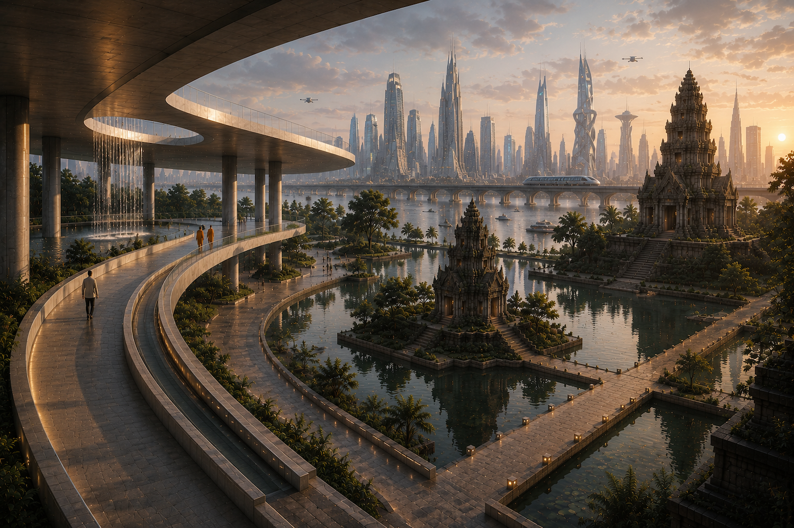
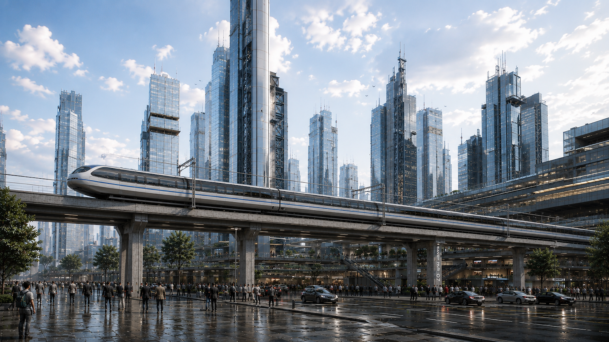
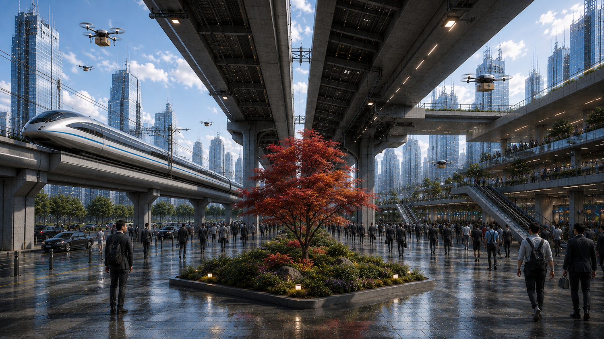
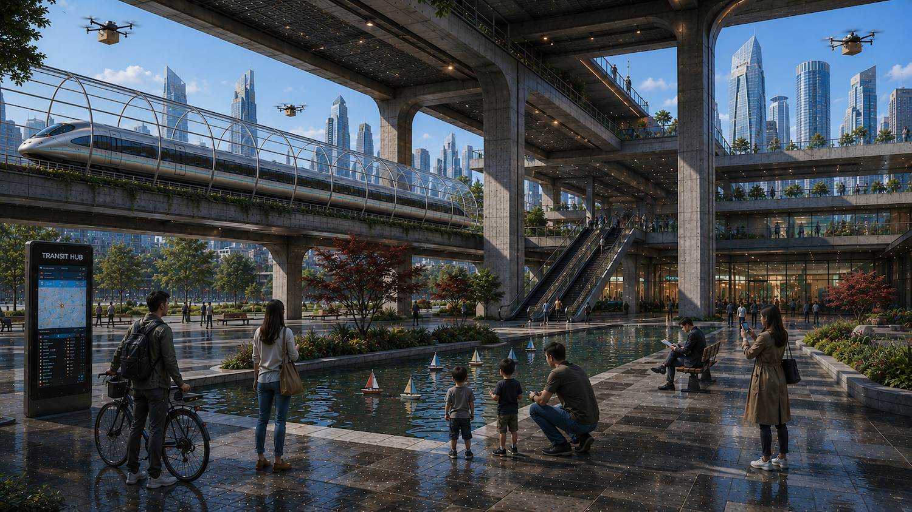
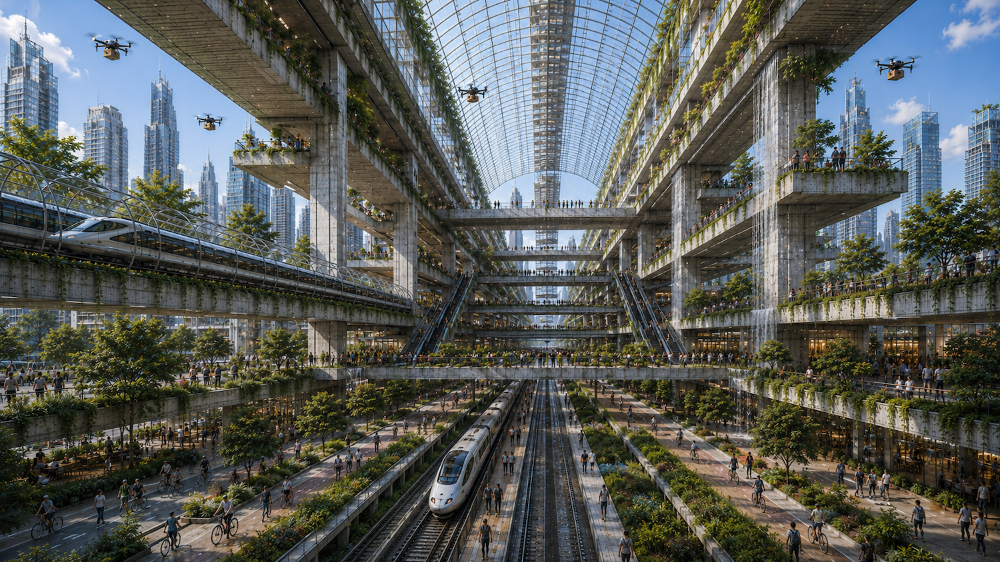
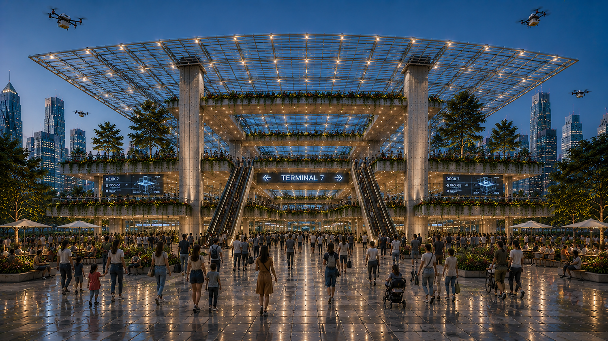
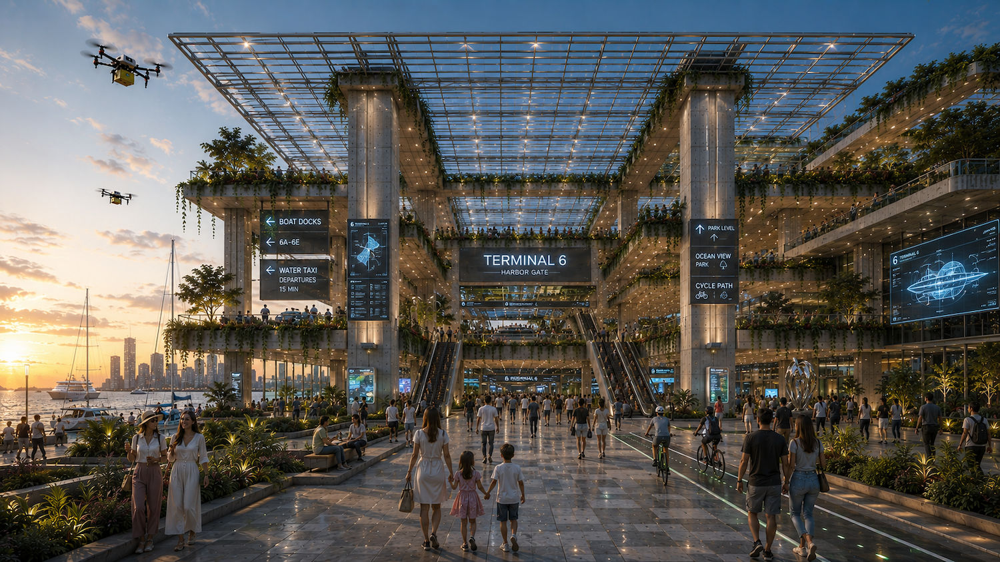
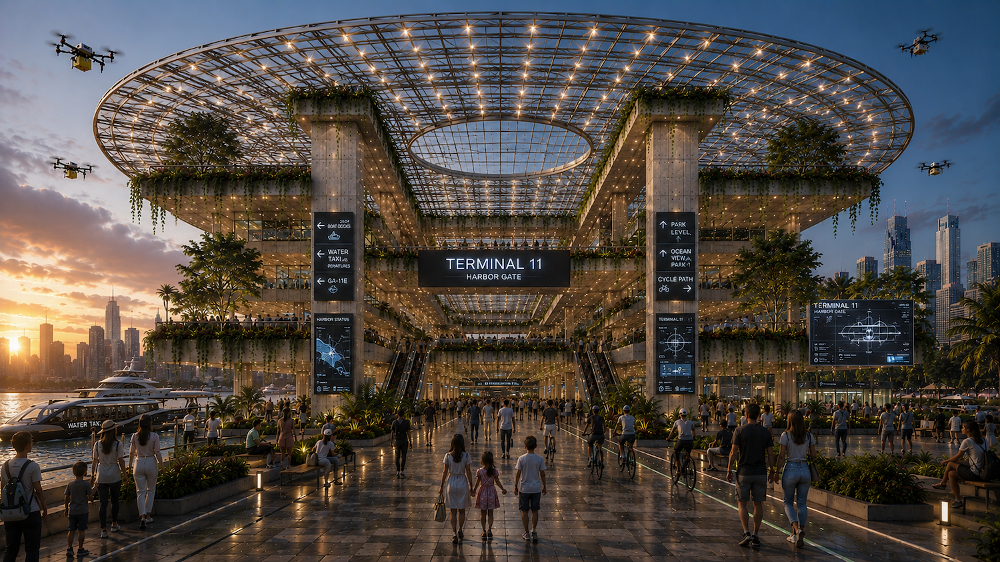
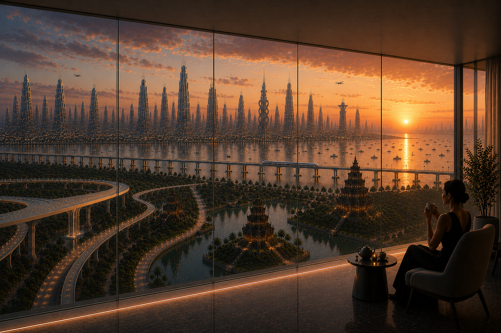
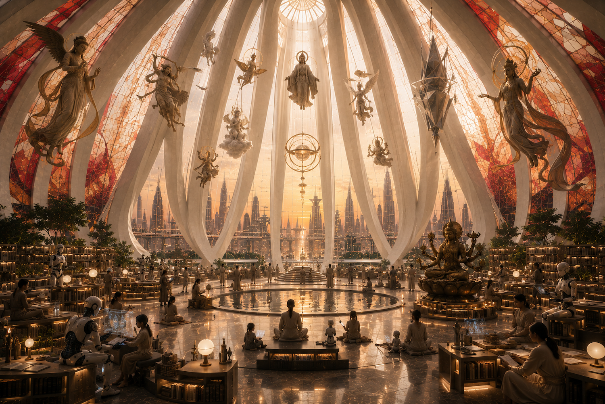

Archive II
CONTINUUM
Not every investigation concludes.
Some transpose.
Continuum gathers investigations that remain deliberately open. Rather than seeking definitive conclusions, these works explore how architecture shifts between representation, infrastructure, landscape, and possible realities. Drawings, models, and speculative propositions become instruments through which alternative worlds can be imagined and tested.
↓
Worldmaking
Architecture as a version of reality.
Continuum is informed by philosopher Nelson Goodman, whose Ways of Worldmaking proposes that worlds are not simply discovered but constructed through systems of symbols, descriptions, classifications, and representations.
Architecture participates in this process. Every drawing selects, omits, orders, weights, supplements, and transforms relationships. Infrastructure becomes landscape; landscape becomes architecture; transportation becomes civic space. A project is therefore not a copy of a predetermined world, but a proposition for another coherent version of it.
Conceptual source: Nelson Goodman, Ways of Worldmaking (1978), especially Chapter I, “Words, Works, Worlds,” and its discussion of composition and decomposition, weighting, ordering, deletion and supplementation, and deformation.

Infrastructure as continuous habitat.Mobility and dwelling become indistinguishable when the city is conceived as layered sections.

Composition and decomposition.The city is disassembled into movement, structure, landscape, commerce, and public life—then composed again.

Civic systems are architectural material.Transportation, recreation, ecology, and daily ritual occupy the same spatial order.

Order does not require separation.Coherence can emerge through overlap, adjacency, and the productive friction of many systems.
Translation
through agility.
Artificial intelligence functions here as a speculative medium. It expands the architect’s capacity for translation, juxtaposition, synthesis, and iteration. Ideas separated by geography, history, culture, technology, material, and scale can be recombined with remarkable agility, allowing previously disconnected architectural propositions to be explored as coherent world versions.

Infrastructure becomes ceremony.The terminal is no longer a threshold passed through, but a civic room in which movement is publicly celebrated.

The sea becomes geography and possibility.Land, water, air, and public life meet through one architectural interface.

Worlds acquire internal logic.Even unfamiliar forms become believable when movement, structure, and inhabitation belong to the same order.

A world is also a point of view.Each frame selects what is near, what is distant, what is remembered, and what is allowed to become visible.

Epilogue
Every world is sustained by more than infrastructure.
It is sustained by belief.
The propositions assembled throughout Continuum investigate transportation, ecology, public space, and architecture as interconnected systems. Yet every constructed world also requires a symbolic order—its institutions, rituals, myths, and places of contemplation.
Following Goodman’s understanding that worlds are made through systems of representation, this final investigation turns toward architecture’s oldest question: not only how we build, but what we choose to believe, remember, celebrate, and preserve.
Ancient cosmologies encounter autonomous technologies. Libraries become sanctuaries. Robots become participants rather than instruments. Sacred space becomes civic space. These propositions do not claim to predict the future. Together, they invite reflection on how architecture might continue to construct new worlds.
CONTINUUM
The investigation remains unfinished.
Return to SEGMENTS →